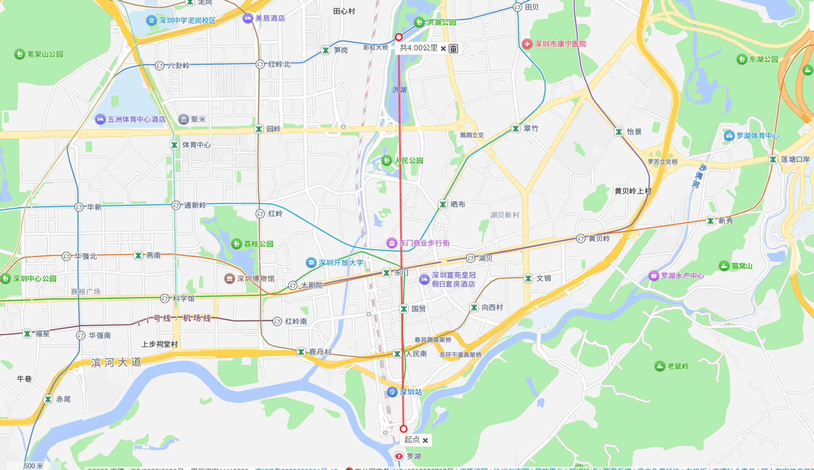

价格视角
01 / METRO
从罗湖站，
看真实通勤半径
底图使用你新截取的高德 4 公里范围图。点地图站点即可筛选；住宅候选必须同时满足“距正式地铁站 1 公里内”与“距罗湖口岸 4 公里内”。

4.00 KM / LUOHU PORT口岸 4km 总边界 · 正式地铁站 1km 住宅圈
02 / INVENTORY
全部房源
0当前结果
03 / SOCIAL CHECK
小红书口碑
核验入口
房源广告和真实居住体验混在一起。这里优先保留“看房记录、避雷、通勤体验”入口；标题命中不等于内容已证实。